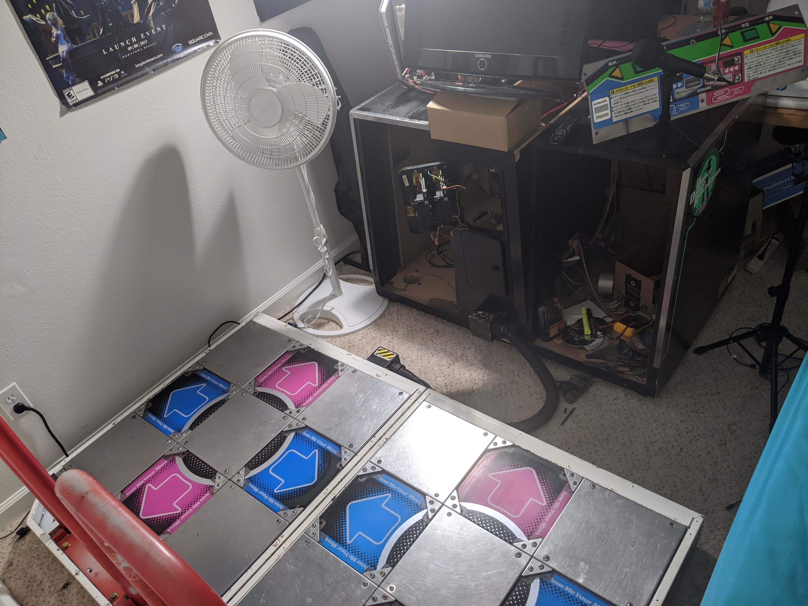
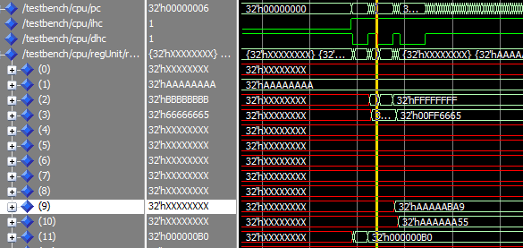

PROJECTS
Projects I found interesting enough to save.
Dance Dance Revolution Dedicab » |  |  |
Sound Voltex Controller » |  |
Apache Spark Clusters » |
Image Stitching » |  |
32-bit Processor Design » |  |
Scarlet Hawks UAV » |  |
CPU Monitor » |  |
LiCoO2 Batteries » |  |
Big Data Project » |  |
Robotics Competition » |  |